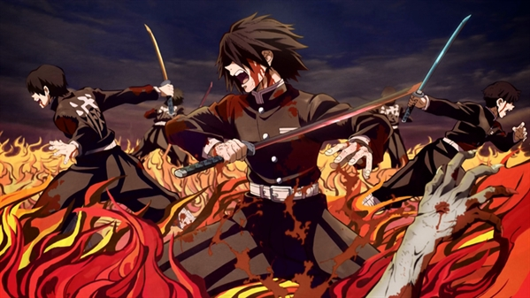
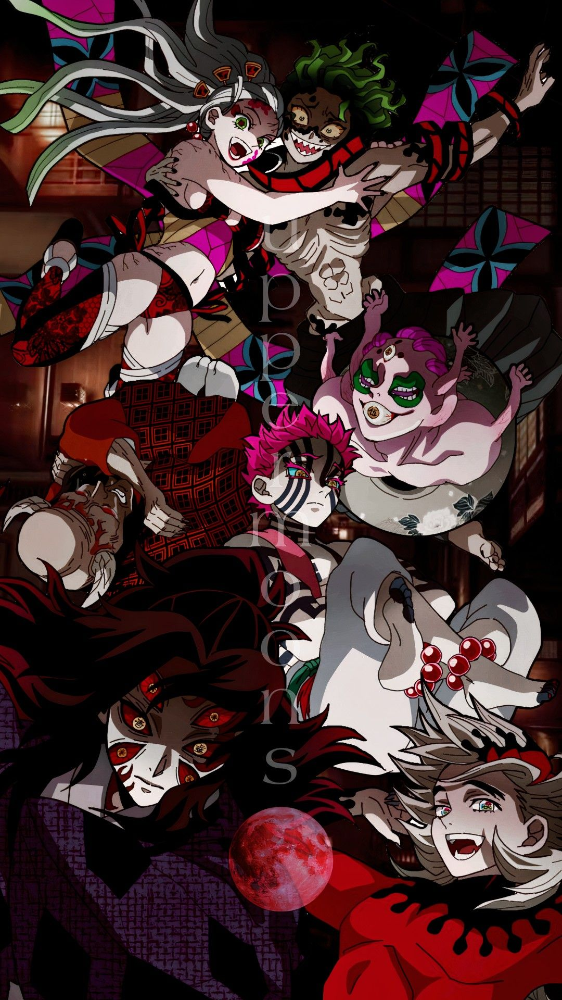
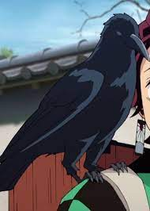
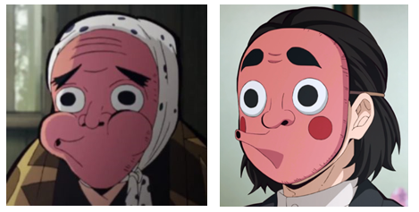
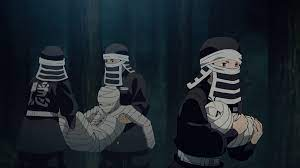

HISTÓRIA

O kisatsuta é um gtupo chamado de Esquadrão de Exterminadores de Demônios que é uma organização existente desde os tempos mais antigos com o intuito de proteger a raça humana dos demônios ou onis em sua denominação original. Não há um número exato de quantos exterminadores ou matadores de demônios integram a organização no entanto muitos deles encontram-se espalhados por todo o Japão. A organização não é reconhecida pelo governo , mas isto nunca os impossibilitou de cumprirem sua função de caçar demônios e principalmente o objetivo de eliminar Muzan Kibutsuji.

Muzan Kibutsuji é o primeiro oni e o reponsável por transformar as pessoas em demônios. Os onis são pessoas que após infectadas, se tornam demonios perdendo todas suas lembrançsa e sobrevivem se alimentando de pessoas e quanto mais pessoas eles comem, mais fortes se tornam e são reconhecidos por Muzan. Eles atacam as pessoas somente durante a noite e caso entrem em contato com a luz do sol, são queimados e morrem.
Quando um oni se alimenta de muitas pessoas, como citado anteriormente, ele se torna mais forte e também desenvolvem poderes e individualidades que são chamadas Jutso de Sangue Demoniaco.
Quando um oni se alimenta de muitas pessoas, como citado anteriormente, ele se torna mais forte e também desenvolvem poderes e individualidades que são chamadas Jutso de Sangue Demoniaco.

Hashiras
Um pilar ou hashira é uma denominação dada aos mais poderosos exterminadores do esquadrão sendo formado por 9 pilares que são assimilados a: Água, Chamas, Amor, Serpente, Pedra, Névoa, Vento, Inseto e Som. Para tornar-se um Pilar, é necessário que o exterminador tenha matado 50 demônios como um kinoe ou que tenha matado um integrante das 12 luas que são um grupo formado pelos demônios mais poderosos do exército de Muzan Kibutsuji.Tsuguko
Um tsuguko é um talentoso exterminador que foi designado a se tornar o sucessor de um pilar se o mesmo falecer ou se abster do seu cargo, para se tornar um tsuguko o exterminador pode integrar o treinamento de hashira e ser aceito ou ser observado por um dos pilares em exercício.Treinador
Um treinador em Demon Slayer, geralmente são ex-hashiras que após se aposentar como hashiras, se responsabilizam a treinar as pessoas para se tornarem bons espadachins, trabalhando seus reflexos, técnicas com as espadas, controle de respiração e execução dessa respiração com o uso de suas espadas. Ao fim do ciclo de treinamento, o treinador decide se seu aluno está pronto para participar da seleção final dos exterminadores, caso eles não estejam prontos, os alunos decidem se querem começar um novo ciclo, tornando-se mais fortes e ir para a seleção.Caso o treinador decida que seus alunos estejam prontos, eles são convocados para a Seleção Final.
A seleção final que é um evento utilizado como um exame para os aspirantes que desejam ingressar na organização, a seleção final consiste em uma prova de sobrevivência em que os aspirantes deveram sobreviver por sete dias em uma montanha cheia de demônios, sem qualquer ajuda do mundo exterior. Os aspirantes que conseguirem sobreviver a seleção final e pegarem o uniforme padrão da organização, o membro terá a oportunidade de escolher a sua própria espada especial sendo forjada especialmente com o intuito de matar demônios, estas espadas são chamadas de lâminas nichirin ou ainda denominadas como as espadas que mudam de cor, e também carregam consigo uma rara espécie de pássaro que detém a habilidade de falar com seu portador com o objetivo de comunicar o exterminador sobre novas missões e chamados de ajuda.

Kasugaigarasu
Os KASUGAIGARASU são corvos treinados pelo esquadrão e que aprendem a falar e ocutar sua presença. Quando um novo exterminador entra para o esquadrão, recebem um corvo, esses corvos são responsáveis por receber informações e leva-las até os exterminadores para determinar sua próxima missão com um conhecimento do que está acontecendo e o local da mesma.FUNÇÕES
Dentro do kisatsutai existem varias funções, onde os aspirantes podem ocupar, cada uma dessas funções são essenciais para a segurança e sobrevivência do esquadão, por isso todos precisam ter os equimanteos bácos para cada missão.Equipamentos básicos:
• Kimono
• Kasugaigarasu
• Kit básico: Comidas e corativos

Exterminadores
As pessoas que ingressam como Exterminadores, tem como objetivo eliminar os Onis.
Os exterminadores são pessoas habilidosas em combate e estratégia, pois dependendo da situação que se depararem em suas missões, saberão gerenciar de forma correta como prosseguir para a conclusão de sua missão. Além dos equipamentos básicos que todos do esquadrão possui, são os exterminadores que possuem suas Lâminas Nichirin (ou lâminas que mudam de cor)
Ferreiros
Os ferreiros são os responsáveis por fazer as espadas(lâminas nichirin) dos exterminadores e esssas espadas são fabricadas com um metal específico que somente eles sabem como manipular o material.Eles vivem em um vilarejo que tem somente ferreiros de todo o esquadão. São pessoas que dedicam suas vidas em fabricar e fazer as melhores espadas, com a melhor qualidade para todos os exterminadores, por isso, assim que um exterminador quebra sua espada durante a batalha, os ferreiros ficam extremamente furiosos por terem quebrado a "obra de arte" deles. Por mais que os oponentes(onis ou demônios) dos exterminadores poderem possuir uma força imensa, os ferreiros responsabilizam os próprios exterminadores por não saber utilizar ou ser fraco demias a ponto de permitir que a espada se quebre.
Entretanto, fazem novas espadas do mesmo jeito.


Kakushi
Os kakushi são um grupo de membros do esquadrão que normalmente não detém habilidades com espadas e tem como principal função de darem os primeiros socorros aos exterminadores que se feriram em suas batalhas ou em missões e também devem os levar para um local onde receberam o tratamento médico necessário..Costureiros
Os costureiros são as pessoas responsáveis a fazerem as roupas de todos do Esquadrão de Exterminadores. As roupas que eles fazem consiste em um par de calças hakama escuras com um tom amarronzado e uma jaqueta gakuran escura com um grande kanji na parte de trás da jaqueta que significa: exterminar.Os costureiros não aparecem no anime, por isso não sabem como são suas roupas, mas acreditamos que utilizam as roupas que eles mesmo fazem.


RANKING EXTERMINADOR
Ao ingressar como exterminador, eles são classificados na primeira classe MIZUNOTO e recebem uma marca em suas mão para ele acompanhar seu progresso dentre as classes.Conforme vão concluindo as missões e evoluindo como exterminadores, vão subindo de classe, ganhando mais salário e possívelmente podendo se tornar um próximo Hashira.
INTRODUÇÃO
O anime se inicia nos mostrando um pouco sobre a vida de Tanjiro Kamado e sua familia como cenários principais. Após um terrível ataque e extermínio de sua familia sobrevivendo somente Nezuko Kamado que havia se transformada em uma oni, Tanjiro se depara com um exterminador e tenta matar a Nezuko e batalha com ele para se defender.Após perder a luta e ter sido desmaiado, Nezuko vai pra cima do Tanjiro e o exterminador achando que ela iria devorar o irmão desmaiado, vai protege-lo, entretando, se depara com a recente oni lutando para defender o irmão e com isso ele desmaia ele e toma a decisão de deixa-los vivos mandando ele para uma missão.
A história então começa ao decorrer de sua jornada para ajudar a irmã a se tornar normal novamente, ele se junta com outros dois personagens, Zenitsu e Inosuke em sua jornada.